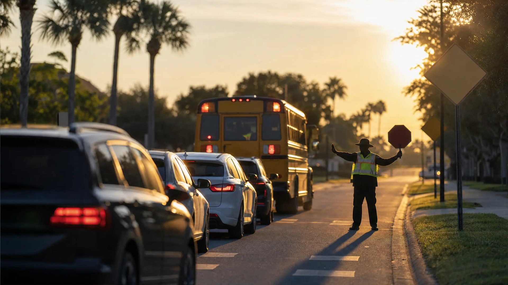

Orlando School Zone Tickets: Fines, Points & Your Options

Orange County students head back to class Tuesday, August 11 — and with them comes the annual surge of school zone tickets. This year the landscape is more complicated than ever: officer patrols and school bus stop-arm citations are live from day one, the City of Orlando's 21 new school zone speed cameras start mailing warnings that same morning, and unincorporated Orange County's cameras won't switch on until 2027. Which ticket you receive matters far more than most drivers realize, because some carry points on your license and some never can.
Enforcement Ramps Up This Week
The first weeks of school are a saturation-patrol event. According to FOX 35 Orlando, the Orange County Sheriff's Office made nearly 700 school-zone traffic stops and cited 249 speeders in just the first week of the 2025 school year. As a former Florida Highway Patrol trooper, I can tell you those numbers aren't an accident — agencies pre-position units in school zones during the arrival and dismissal windows precisely because that's when the reduced limit is enforceable.
That timing point matters for your defense, too. Under F.S. 316.1895, the 15–20 mph school zone limit applies only during the posted hours or while the beacons are flashing. Outside those windows, a "school zone" stop is just an ordinary speeding case — a detail worth checking on any citation before you pay it, and one reason having an attorney review a ticket routinely beats handling it yourself.
The Orlando Camera Timeline
Per ClickOrlando, the City of Orlando's 21 new school-zone speed cameras go live August 11 but mail warnings only through September 24 — real $100 notices of violation begin September 25 for drivers clocked more than 10 mph over the school-zone limit. FOX 35 reports that unincorporated Orange County's separate 12-school camera program doesn't activate until January 27, 2027, followed by its own 30-day warning period. Officer citations and bus stop-arm enforcement, by contrast, are live everywhere starting day one.
School Zone Speeding: How Fines Double
When an officer writes you a speeding ticket in a legally posted, active school zone, F.S. 318.18(3)(c) doubles the fine you'd pay for the same speed anywhere else. Even 5 mph or less over — a speed that draws no fine on an ordinary road — costs a flat $50 in a school zone; anything above that pays double the standard schedule. Worse, that citation is a moving violation: under F.S. 322.27, speeding adds 3 points to your license — 4 points if you were more than 15 mph over. Those points feed directly into insurance rates and, if they pile up, license suspension.
A camera-generated ticket is a different animal entirely. Under F.S. 316.1896, a school zone speed camera produces a $100 notice of violation mailed to the vehicle's registered owner. It's a civil matter — no points, no insurance reporting, no driver-history entry. But it isn't ignorable: an unanswered notice escalates into a uniform traffic citation under the F.S. 316.0083 process, and at that stage the cost climbs and the leverage shifts against you.
School Bus Stop-Arm Violations and Bus Cameras
F.S. 316.172 requires every driver — in both directions — to stop for a school bus displaying its stop signal, unless the road is divided by a raised barrier or an unpaved median. An officer-written stop-arm citation carries 4 points under F.S. 322.27 and a minimum $200 fine under F.S. 318.18, rising to a $400 minimum with a mandatory court appearance if you passed on the side where children enter and exit.
Camera-caught bus passes run on the civil track instead. Under F.S. 316.173, a bus-mounted camera generates a $225 notice of violation to the registered owner — no points, no insurance consequence. This is a statewide wave: News4Jax reported Duval County alone equipped more than 900 buses with cameras in 2026. Orange County drivers should assume the bus next to them is recording.
Passing on the Entry Side Is a Different Case
If an officer cites you for passing a stopped school bus on the side where children get on and off, F.S. 316.172 makes a court hearing mandatory — you cannot simply pay it and move on. Treat that citation as a serious matter from the day it's written.
Phones in School Zones: Florida's Hands-Free Rule
Here's a point of frequent confusion: Florida still has no general hands-free law. The 2026 statewide hands-free bill (HB 1241) died in committee, so texting while driving under F.S. 316.305 remains the only statewide phone offense. But F.S. 316.306 bans any handheld use of a wireless device in an active school zone, school crossing, or work zone — and that's a primary offense, meaning an officer can stop you for it alone. A violation carries a fine and 3 points, though first-time offenders may earn relief by showing proof of hands-free equipment. Holding your phone at a red light in an active school zone Tuesday morning is a stoppable, point-carrying violation.
Which Ticket Do You Actually Have?
Everything above collapses into one question: is your paperwork a camera-based notice of violation, or a uniform traffic citation? The distinction works much like the toll notice versus UTC split under F.S. 316.1001 — the envelope from a camera vendor is civil, point-free, and something you can pay or dispute yourself; the citation handed to you by an officer carries points, doubled fines, and insurance consequences that outlast the ticket.
Camera notices are also more disputable than people assume. Under Jimenez v. State and City of Hollywood v. Arem, the camera vendor can only sort footage — a trained officer must make the actual decision to issue. And installations don't always hold up: a Tampa Bay 28 investigation found faulty camera poles and signage that didn't meet FDOT specs, contributing to 5,467 dismissals out of the 67,611 camera tickets Hillsborough County issued from August through December 2025.
Quick Reference: Points or No Points?
- Officer speeding citation in a school zone: doubled fine under F.S. 318.18(3)(c), 3–4 points
- Speed camera notice (F.S. 316.1896): $100, civil, no points — unless ignored
- Officer stop-arm citation (F.S. 316.172): $200–$400 minimum, 4 points, possible mandatory hearing
- Bus camera notice (F.S. 316.173): $225, civil, no points — unless ignored
- Handheld phone in an active school zone (F.S. 316.306): moving violation, 3 points
Your Options and Deadlines
For a camera notice of violation, F.S. 316.0083 gives you 30 days to pay or request a hearing before a local hearing officer — do nothing and it escalates into a UTC. For a uniform traffic citation, F.S. 318.14 gives you 30 days to pay, elect traffic school, or request a hearing. Traffic school stops the points, but you can only elect it once every 12 months and eight times in a lifetime — limits every Florida driver should understand before burning an election on a fightable ticket. Paying a school zone UTC outright means accepting the points and whatever your insurer does with them for years afterward. Contesting is often worth serious consideration, and a first traffic court hearing is far less intimidating than most people fear.
How a Criminal Defense Attorney Can Help
If you're facing a school zone citation in Orlando, an experienced defense attorney can check whether the zone was actually active at the time of your stop, whether the signage and beacons complied with F.S. 316.1895, whether a camera installation meets the legal requirements, and whether an election like traffic school or a negotiated resolution can keep points off your record. As a former State Trooper and Deputy Sheriff, I understand how law enforcement builds these cases—and how to challenge them effectively.
Handed a School Zone Citation?
If you were handed a uniform traffic citation in a school zone — not just a camera notice in the mail — contact Lotter Law before you pay it and put points on your license.
Contact Lotter Law at 407-500-7000 for a free consultation.

Jeff Lotter
Criminal Defense Attorney | Former State Trooper
Jeff Lotter is an Orlando criminal defense attorney and former Florida Highway Patrol trooper. He uses his law enforcement background to build stronger defenses for clients facing criminal charges.
Related Articles
The 75-Year Traffic School Trap: What Every Florida Driver Needs to Know
Attorney Jeff Lotter reveals how choosing traffic school for speeding tickets can actually cost you more than paying the fine. Data-driven a…
Why Hiring an Attorney Beats Handling a Traffic Ticket Yourself – The Data Speaks
Data analysis shows why hiring an attorney leads to better outcomes for Florida traffic tickets. Explore our interactive dashboard to see th…
What to Expect at Your First Traffic Court Hearing in Florida
Nervous about your first traffic court appearance? Here's exactly what happens from check-in to verdict in Orange, Osceola, and Seminole Cou…
Florida Toll Notice vs. UTC: What Statute 316.1001 Means
A Florida toll-by-plate notice and a Uniform Traffic Citation are very different. Learn how Statute 316.1001 works and how to resolve each s…